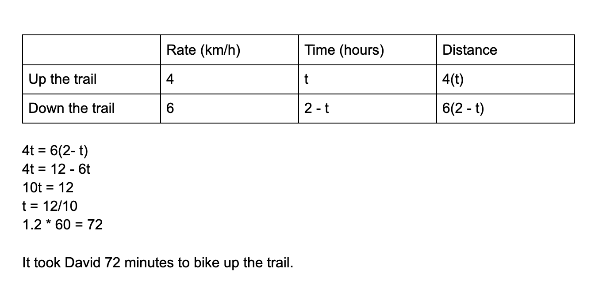

Article
Unit 3 - Solving linear word problems
From Mathipedia, the free encyclopedia
Linear word problems are word problems that include one single variable.
They are also most easily and often solved using 4x3 charts. A common
source of error here can be in creating multiple variables,
which is not how equations such as this should be solved. Another common source of error is simplifying incorrectly, and not following the correct steps using GEMDAS.
which is not how equations such as this should be solved. Another common source of error is simplifying incorrectly, and not following the correct steps using GEMDAS.
GEMDAS is a way of determing operation sequences, as to determine the
order one should perform them in a mathematical statement. It stands for
grouping symbols, exponents, multiplication, division, addition, and
subtraction. It dictates that one should first simplify anything within
grouping symbols, then any exponents, then multiplication, and etc. No
specific mathematician has been credited with the invention of it, it
has merely developed over time with the intent to standardize answers
and solving techniques.
When solving linear word problems, one has to create their own equation,
and solve themselves. Sometimes, order of operations can be accidentally
reordered in translation. For example, in the phrase
"two groups of two subtracted from half a number", one may accidentally translate that as n/2 - 2(2) instead of 2(n/2 - 2). Ambiguous wording and complicated language is a major problem in determing
order of operations and/or the correct equation for a word problem.
"two groups of two subtracted from half a number", one may accidentally translate that as n/2 - 2(2) instead of 2(n/2 - 2). Ambiguous wording and complicated language is a major problem in determing
order of operations and/or the correct equation for a word problem.
An example and steps of one type of linear word problem is shown here:
"David bikes up a trail at 4km/h and down the same trail at 6km/h, if
it takes him 2 hours to be back at the beginning,
how long did it take him to bike up the trail?" A chart is shown below with an example of how this type of problem may be set up, as well as the steps to solve.

how long did it take him to bike up the trail?" A chart is shown below with an example of how this type of problem may be set up, as well as the steps to solve.